l'Overworld
Les biomes :
Il existe une très grande variétés de biomes et de créatures dans l'overworld,des rivières aux montagnes enneigées en passant par les forêts roses de cerisier et les grottes gigantesques.
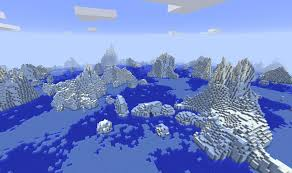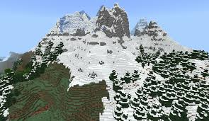 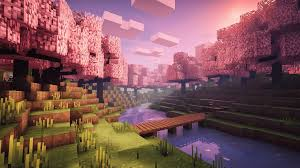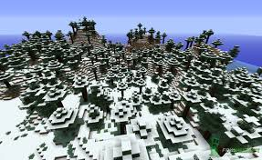 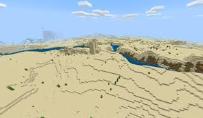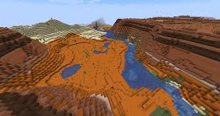 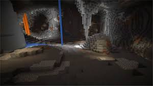
Les créatures :
Les créatures de l'Overworld sont les créatures "basiques" du jeu,les animaux qui peuvent fournir des ressources,viande cuir,oeufs comme les vaches,les cochons,les poulets,les moutons
ou d'autres qui peuvent servir à la compagnie ou au transport.Il y aussi des monstres comme les zombies,squelettes,araignées,creeper ou encore sorcières.


Les structures :
Dans l’Overworld, il existe de nombreuses structures. Certaines ne se trouvent que dans des biomes spécifiques, comme les manoirs de
présents uniquement dans les forêts sombres, contrairement aux villages que l’on peut rencontrer dans presque tous les biomes.
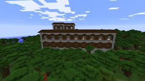
 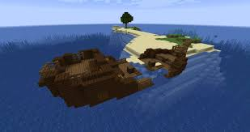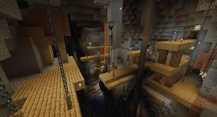
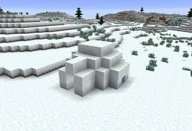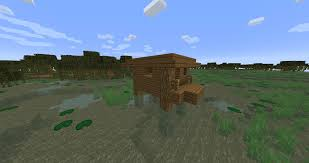
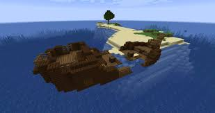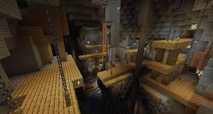
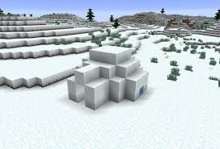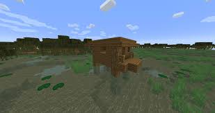